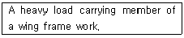
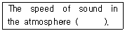
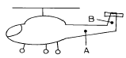
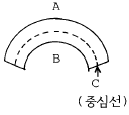
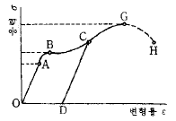

항공기체정비기능사 (2003-01-26 기출문제)
1과목: 비행원리
1. 유체의 흐름이 층류에서 난류로 변하는데 관계되는 요소에 속하지 않는 것은?
- 유체의 속도
- 유체의 양
- 유체의 점성
- 물체의 형상
(정답률: 56%)

2. 공기의 흐름에 수직으로 놓여 있는 원통의 지름이 0.8m, 공기의 흐름속도가 360㎞/h일 때 원통주위 흐름의 레이놀즈수는 얼마인가? (단, 공기의 동점성계수는 0.2㎝2/sec로 한다.)
- 2 x 105
- 3 x 105
- 4 x 106
- 5 x 106
(정답률: 61%)
3. 조종간과 승강키가 기계적으로 연결되어 있을 때 조종력과 승강키의 힌지모멘트(HINGE MOMENT) 관계식은? (단, Fe: 조종력, He: 승강키 힌지모멘트, K: 조종계통의 기계적장치에 의한 이득)
- Fe = K x He
- Fe = K ÷ He
- Fe = K2 x He
- Fe = He ÷ K
(정답률: 84%)
4. 헬리콥터의 하중이 1,500㎏,양력이 1,800㎏,항력이 900㎏ 그리고 추력이 2,100㎏이며 기관의 출력이 300㎰일때, 이 헬리콥터의 마력하중은 몇㎏/㎰인가?
- 3
- 4
- 5
- 6
(정답률: 55%)
5. 압력중심(Center of pressure)의 이동에 대한 설명 내용으로 가장 올바른 것은?
- 받음각이 증가하면 앞으로 이동한다.
- 받음각이 증가하면 뒤로 이동한다.
- 속도가 증가하면 앞으로 이동한다.
- 속도가 증가하면 뒤로 이동한다.
(정답률: 54%)
6. 720㎞/h로 비행하는 비행기 마하계의 눈금이 0.6 을 지시했다면, 이 고도에서의 음속[m/sec]은?
- 340
- 333
- 327
- 322
(정답률: 61%)
7. 활공기가 활공각 읨로 활공비행 할 때 항력계수(CD)와 양력계수(CL)와의 관계를 올바르게 표현한 것은?
- CD = CL sinθ
- CD = CL cosθ
- CD = CL tanθ
- CD = CL secθ
(정답률: 40%)
8. 날개골의 공력 특성은 날개골의 모양에 따라 달라진다. 다음 설명중 틀린 것은?
- 얇은 날개골은 받음각이 작으면 항력이 작아진다.
- 앞전 반지름이 큰 날개골은 받음각이 작으면 앞전 반지름이 작을 때 보다 항력이 작아진다.
- 같은 받음각에 대해서 캠버가 큰 날개 일수록 큰 양력을 얻을 수 있다.
- 시위 길이가 길면 큰 받음각에서도 쉽게 흐름의 떨어짐이 생기지 않는다.
(정답률: 50%)
9. 항공기 날개에 앞내림(Wash out)을 주는 가장 큰 이유는?
- 양력을 증가시키기 위해
- 실속이 날개뿌리에서 부터 시작하도록 하기 위해
- 세로 안정성을 좋게하기 위해
- 실속을 방지하기 위해
(정답률: 62%)
10. 항공기 동체에 작용하는 공기력은 주로 어떤 것이 작용 하는가?
- 양력
- 중력
- 항력
- 추력
(정답률: 44%)
11. 비행기의 무게가 5,000㎏이고 경사각이 30° 로 정상 선회를 하고 있을 때 이 비행기의 원심력은 몇[㎏]인가?
- 1886
- 2887
- 3887
- 4887
(정답률: 64%)
12. 동적 세로 안정의 단주기 운동에서 승강키 자유운동에 대한 설명 내용으로 가장 올바른 것은?
- 승강키의 플래핑(flapping) 운동에서 발생한다.
- 대개 작은 감쇄를 가진다.
- 큰 감쇄를 갖기 위해서는 10초에서 100초 사이의 시간이 소요된다.
- 일반적으로 승강키에 임의의 플래핑을 주어 감쇄 시킨다.
(정답률: 61%)
13. 이륙거리를 가장 올바르게 설명한 것은?
- 지상활주거리와 상승거리의 합
- 타이어가 움직이기 시작하여 지상에서 떨어질 때 까지의 거리.
- 이륙 후 비행기가 수평비행 될 때까지의 거리
- 비행기가 활주를 시작하여 기수를 들어올릴 때 까지 거리
(정답률: 64%)
14. 한쪽 날개가 충격실속을 일으켜 옆놀이를 일으키는 현상은?
- 디프 실속
- 턱 언더
- 피치업
- 날개드롭
(정답률: 62%)
15. 회전익 항공기에서 자동회전(autorotation)이란?
- 주회전날개의 반작용 토크(torque)에 의해 항공기 기체가 자동적으로 회전하려는 경향을 말한다.
- 전진하는 깃(blade)과 후퇴하는 깃의 양력차이에 의하여 항공기 자세에 불균형이 생기는 것을 말한다.
- 꼬리 회전날개에 의해 항공기의 방향조종을 하는 것을 말한다.
- 회전날개 축에 토크가 작용하지 않는 상태에서도 일정한 회전수를 유지하는 것을 말한다.
(정답률: 67%)
16. 항공기에 장착된 상태에서 수행하는 장비의 정비작업은?
- 벤치체크
- 기능점검
- 오버홀
- 노화표본검사
(정답률: 71%)
17. 부분품의 오버홀(Over haul)의 순서가 맞는 것은?
- 분해 → 검사 → 세척 → 시험 → 수리 → 조립
- 검사 → 수리 → 세척 → 시험 → 분해 → 조립
- 수리 → 시험 → 조립 → 검사 → 세척 → 분해
- 분해 → 세척 → 검사 → 수리 → 조립 → 시험
(정답률: 80%)
18. 다음중 측정값을 지시하지 못하는 것은?
- 마이크로미터(MICROMETER)
- 버니어 캐리퍼스(VERNIER CALIPERS)
- 디바이더(DIVIDERS)
- 다이알 인디케이터(DIAL INDICATOR)
(정답률: 78%)
19. 오일휠터(OIL FILTER), 연료휠터(FUEL FILTER)등을 장탈 장착 할 때 표면에 손상을 주지않도록 사용되는 공구는?
- 어져스테이블 렌치(AJUSTABLE WRENCH)
- 인터록킹 죠인트 뿌라야(INTERLOCKING JOINT PLIER)
- 스트랩 렌치(STRAP WRENCH)
- 콘넥터 플라이어(CONNECTOR PLIER)
(정답률: 60%)
20. 버니어 캘리퍼스를 사용할 때 주의사항 중 틀린 것은?
- 가능한 캘리퍼스 죠(jaw) 바깥쪽을 이용해서 측정한다.
- 측정할 때 측정기구에 과도한 힘을 주지 않는다.
- 회전하는 물체는 측정하지 않는다.
- 눈금을 읽을 때는 시선을 눈금과 직각의 위치에 두고 읽도록 한다.
(정답률: 66%)
2과목: 항공기정비
21. 스크루우(serew)의 일반적인 구분에 속하지 않는 것은?
- 접시머리 스크류
- 기계용 스크류
- 자동태핑 스크류
- 구조용 스크류
(정답률: 48%)
22. 두께가 0.⑤1인치인 재료를 곡률반경 0.125인치가 되도록 90° 구부릴 때 생기는 세트백은?
- 0.074
- 0.176
- 1.45
- 2.45
(정답률: 75%)
23. 생크(SHANK)에 구멍이 뚫여 있는 볼트(BOLT)에 성형너트(CASTLE NUT)를 사용하였다. 볼트(BOLT)에 너트(NUT)를 고정시키는데 필요한 것은?
- 세이프티와이어(SAFETY WIRE)
- 록크와샤(LOCK WASHER)
- 특수와샤(SPECIAL WASHER)
- 코-터핀(COTTER PIN)
(정답률: 69%)
24. 치수측정 검사를 뜻하는 것은?
- 비교검사법
- 와류검사법
- 몰입검사법
- 침투측정법
(정답률: 80%)
25. 실린더 게이지 측정작업시 안전 및 유의사항으로 틀린 것은?
- 측정하고자 하는 실린더의 안지름 크기를 대강 파악하여, 이에 알맞는 측정자를 선택해야 한다.
- 측정자를 실린더 게이지에 고정시킬 때에 느슨하게 죄어 측정자의 파손을 방지한다.
- 실린더 게이지로 측정할 때는 특히 실린더 중심선의 손잡이 부분을 평행하게 유지해야 한다.
- 측정기구를 사용할 때는 무리한 힘을 주어서는 안된다.
(정답률: 79%)
26. 다음의 안전색채 중에서 장비 및 시설물은 직접 인체에 위험을 주지는 않으나, 주의하지 않으면 사고의 위험이 있다는 것을 작업자에게 알려주는 색채는?
- 노란색 안전색채
- 붉은색 안전색채
- 파란색 안전색채
- 자주색 안전색채
(정답률: 79%)
27. 화염 물질을 덮거나 공기를 차단하므로써 진화되는 화재이며 탄산가스 소화기, 거품 소화기 및 건조화학 분말 소화기로 진화되는 화재로 가장 적당한 것은?
- A급화재
- B급화재
- C급화재
- D급화재
(정답률: 53%)
28. 균열(Crack)등이 일어난 경우 그 균열(crack)의 끝부분에 뚫는 구멍을 무엇이라 하는가?
- 스톱홀(Stop Hole)
- 크리닝아웃(Cleaning out)
- 크린업(Clean Up)
- 스므스아웃(smooth out)
(정답률: 75%)
29. 항공기를 들어 올리는 작업을 할 때, 안전사항과 가장 관계가 먼 것은?
- 사용할 장비의 작동상태를 점검한다.
- 어댑터등 부속장비의 정확한 사용과 기체의 중량을 확인해야 하며, 필요한 경우에는 밸러스트를 사용한다.
- 항공기를 들어올리고 내릴 때는 천천히 꼬리부분이 먼저 내려오도록 한다.
- 작업중에 항공기 안에 사람이 있어서는 안된다.
(정답률: 78%)
30. 다음 문장이 뜻하는 올바른 단어는?

- skin
- spar
- stringer
- rib
(정답률: 50%)
31. 다음 ( )안에 알맞는 말은?

- varies according to the frequency of the sound.
- changes with a change in temperature
- changes with a change in pressure
- changes with a change in density
(정답률: 64%)
32. 철 금속재료의 부품에 생긴 미세한 균열이나 결함 등은 육안검사로 확인하기가 어려운데, 이러한 경우 일반적으로 가장 많이 사용되는 검사는?
- 와전류 검사
- 확대경 투시 검사
- 침투탐상 검사
- 방사선 투과 검사
(정답률: 34%)
33. 불안전한 조건에서 발생되는 사고와 관계 없는 것은?
- 작업 상태의 불량
- 불안전한 습관
- 건물 상태의 불안전
- 정돈 불량
(정답률: 56%)
34. 항공기 정비방식으로서 적당하지 못한 것은?
- 시한성 정비
- 상태 정비
- 감항성 정비
- 신뢰성 정비
(정답률: 51%)
35. 표준 토크 렌치의 눈금 표시판에는 안쪽 눈금과 바깥쪽 눈금이 각각 있다. 이것의 용도는 무엇인가?
- 볼트의 지름에 따라 구별하여 사용한다.
- 바깥쪽 눈금은 안쪽 눈금의 10배에 해당하는 토크 값이다.
- 안쪽 눈금은 토크 값을, 바깥쪽 눈금은 바늘의 회전수를 제시한다.
- 왼쪽, 혹은 오른쪽으로 토크를 줄 때 각각 구별하여 사용한다.
(정답률: 36%)
36. 꼬리날개부(EMPENNAGE)를 구성하고 있는 조종면(FLIGHT CONTROL SURFACE)은?
- 수평안전판(HORIZONTAL STABILIZER), 방향타(RUDDER), 승강타(ELEVATOR)
- 수평안전판, 방향타, 승강타, 보조익
- 수평안전판, 방향타, 승강타, 수직안전판(VERTICAL STABILIZER)
- 수평안전판, 방향타, 승강타, 속도제어장치(SPEED BRAKE)
(정답률: 70%)
37. 승강키, 도움날개, 방향키와 같은 주 조종계통에 사용할 수 없는 케이블의 지름은?
- 1/4 치 이하
- 1/8 치 이하
- 1/16 인치 이하
- 1/32 인치 이하
(정답률: 52%)
38. 기관이나 기관에 부수되는 보기 및 엔진마운트나 방화벽 주위에 접근할 수 있도록 떼었다 붙였다 할 수 있는 덮개를 무엇이라 하는가?
- 트루니온 마운트(Trunnion Mount)
- 파일론(Pylon)
- 공기스쿠우프(Airscoop)
- 엔진 카울링(Engine Cowling)
(정답률: 73%)
39. 미국규격협회(ASTM)에서 알루미늄 합금의 냉간가공 상태, 열처리 상태를 표기하는 식별기호에 관한 설명으로 가장 올바른 것은?
- F : 풀림 처리를 한 것
- O : 담금질후 시효경화가 진행중인 것
- H : 가공 경화한 것
- W : 주조한 그대로의 상태의 것
(정답률: 56%)
40. ALCLAD 2024-T4 란?
- 순수 알루미늄을 입힌 알루미늄 합금으로 용액내에서 열처리한 것이다.
- 순수 알루미늄이다.
- 알루미늄 합금으로 인공적으로 형성시킨 것이다.
- 순수 알루미늄 합금을 입힌것으로 냉간 가공한 것이다.
(정답률: 54%)
3과목: 항공기체
41. 저 탄소강 이란?
- 탄소가 0.10∼0.30%를 함유한 탄소강을 말한다.
- 탄소가 0.30∼0.60%를 함유한 탄소강을 말한다.
- 탄소가 0.60∼1.20%를 함유한 탄소강을 말한다.
- 탄소가 1.20∼1.50%를 함유한 탄소강을 말한다.
(정답률: 71%)
42. 다음은 실란트(Sealant)에 관한 내용이다. 틀린 것은?
- 기체표면의 흠을 메워 공기 흐름의 혼란을 감소시킬 목적으로도 쓰인다.
- 작업하는 부분에 낡은 실란트가 있어 제거할 때는 실란트 제거제를 사용하여 깨끗이 제거한다.
- 보관은 사용시 접착의 밀착성을 위해 따뜻하게 보관한다.
- 성분적으로 구별하면 티오콜계와 실리콘계의 합성 고무로 나뉜다.
(정답률: 69%)
43. 올레오 스트러트(Oleo strut)의 팽창된 길이를 알아내는 일반적인 방법으로 가장 올바른 것은?
- 스트러트(Strut)의 노출된 부분에 길이를 측정한다.
- 스트러트(Strut)의 액량을 측정한다.
- 프로펠러(Propeller)의 팁(Tip) 간격을 측정한다.
- 지면과 날개의 부분과의 거리를 측정한다.
(정답률: 48%)
44. 일반적인 브레이크 장치에 대한 설명으로 가장 관계가 먼 것은?
- 싱글 디스크 브레이크는 소형기에 사용된다.
- 멀티 디스크 브레이크는 대형기에 사용된다.
- 팽창 튜우브 브레이크는 소형기에 사용된다.
- 세그먼트 로터 브레이크는 소형기에 사용된다.
(정답률: 60%)
45. 헬리콥터 조종실의 윈드실드의 재료로 가장 올바른 것은?
- 열경화성수지
- 유리섬유
- 투명 고탄소경화수지
- 강화플라스틱
(정답률: 44%)
46. 그림에서 A, B의 명칭이 옳게 짝지워진 것은?(순서대로 A, B)

- 테일붐 - 파일론
- 파일론 - 테일붐
- 안정판 - 파일론
- 테일붐 - 안정판
(정답률: 61%)
47. 헬리콥터의 2/3회 진동이 발생하는 원인으로서 가장 올바른 것은?
- 회전날개 감쇠장치의 원활하지 못한 작동
- 회전날개 깃의 손상에 의한 정적불평형
- 조종로드 베어링의 심한 마멸
- 회전날개에 의한 공기흐름의 교란
(정답률: 26%)
48. 물체에 휨모멘트(Bending Momemt)가 작용 할 때 발생하는 응력에 대해 가장 올바르게 설명한 것은?

- A에는 압축응력이 발생한다.
- B에는 인장응력이 발생한다.
- C에는 압축응력이 발생한다.
- C에는 인장,압축응력이 발생하지 않는다.
(정답률: 70%)
49. 모노코크형 동체 구조에서 주요 하중을 담당하는 구성 요소는?
- 외피(Skin)
- 론저론(Longeron)
- 스트링거(Stringer)
- 정형재(Former)
(정답률: 69%)
50. 복합재료의 가압방법(Applying Pressure)에서 숏백(shotBag)이란?
- 미리 성형된 카울 플레이트(Caul Plate)와 함께 사용되어 수리부분의 뒷쪽을 지지한다.
- 수리한 곳에 압력을 가하는 가장 효과적인 방법이다.
- 넓은 곡면이 있어서 클램프를 사용할 수 없는 곳에 적합하다.
- 나일론 직물로 진공 백을 사용할 때 블리이더 재료(bleeder material)등의 제거를 용이하게 해준다.
(정답률: 38%)
51. 안전여유(Margin of safety)를 구하는 공식으로 올바른 것은?
- 안전여유 =허용하중(또는 허용응력)/실제하중(또는 실제응력)-1
- 안전여유 =실제하중(또는 실제응력)/허용하중 (또는 허용응력)-1
- 안전여유 =허용하중/설계하중+1
- 안전여유 =허용하중/설계하중-1
(정답률: 43%)
52. 한계하중배수(Limit Load Factor)가 가장 높은 유형의 항공기는?
- 보통기(N)
- 실용기(U)
- 곡예기(A)
- 수송기(T)
(정답률: 67%)
53. 일정한 응력을 받는 재료가 일정한 온도에서 시간이 경과함에 따라 하중이 일정하더라도 변형율이 변화하는 현상을 무엇이라 하는가?
- 피로(Fatigue)
- 피로한도(Fatigue limit)
- 크리프(Creep)
- 좌굴(Buckling)
(정답률: 59%)
54. 헬리콥터의 동체구조 중 모노코크형 기체구조의 특징은?
- 무게가 가볍다.
- 유효공간이 크다.
- 곡선과 형상을 정밀하게 가공할 수 없다.
- 수평구조부재가 있다.
(정답률: 71%)
55. 헬리콥터의 스키드 기어형 착륙장치에서 스키드 슈(skid shoe)의 사용 목적을 가장 올바르게 표현한 것은?
- 휠(Wheel)을 스키드에 장착할 수 있게 하기 위해
- 회전날개의 진동을 줄이기 위해
- 스키드가 지상에 정확히 닿게 하기 위해
- 스키드의 부식과 손상의 방지를 위해
(정답률: 75%)
56. 항공기에서 가장 무거운 무게는?
- 최대 착륙무게
- 최대 이륙무게
- 최대 영연료 무게
- 기본 자기무게
(정답률: 76%)
57. 항공기의 조종면의 평형은 어떠한 상태가 가장 바람직한가?
- 수평위치에서 조종면의 뒷전이 내려가는 상태
- 수평위치에서 조종면이 올라가는 상태
- 조종면의 앞전이 무거운 과대평형 상태
- 조종면의 앞전이 가벼운 상태
(정답률: 37%)
58. 봉재(bar) 중 비교적 긴 부재로서, 길이 방향으로 압축을 받는 부재를 나타내는 것은?
- 막대(axial rod)
- 트러스(truss)
- 보(beam)
- 기둥(column)
(정답률: 42%)
59. 그림은 인장 시험에 의한 응력과 변형률의 관계를 보여준다. 항복점을 나타내는 것은?

- A
- B
- C
- G
(정답률: 69%)
60. 길이가 L이고, 재료의 선팽창 계수가 α 인 구조재에 t℃ 만큼의 온도 증가가 있었다. 온도의 변화에 의해서 늘어 난 길이 δ 를 구하는 식으로 가장 올바른 것은?
- δ = α · (L · t)2
- δ = α2 · L· t
- δ = α · L / t
- δ = α · L· t
(정답률: 47%)